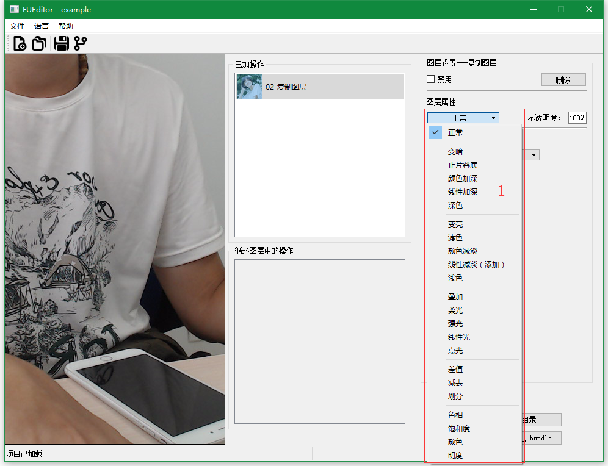
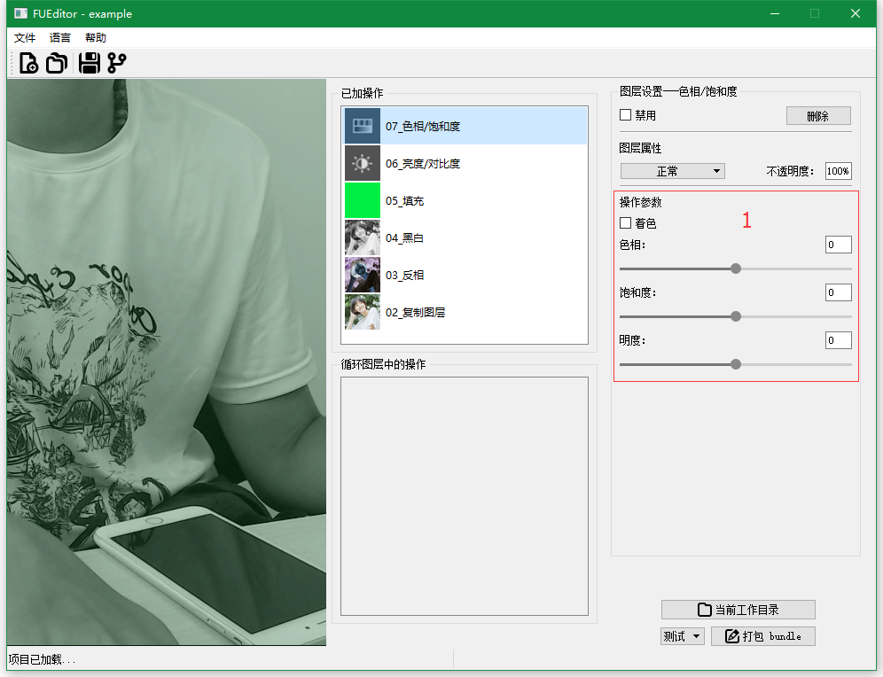
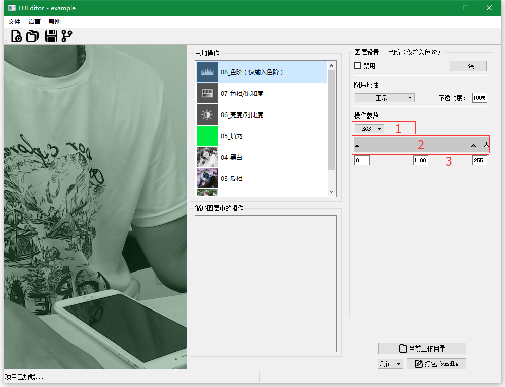
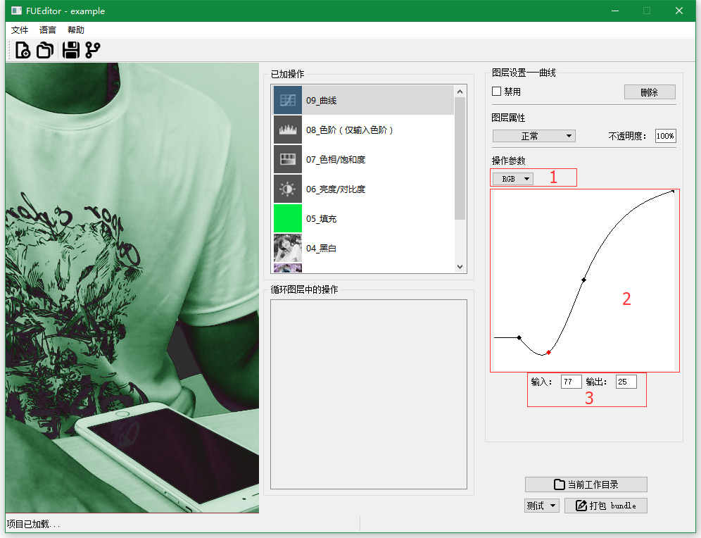
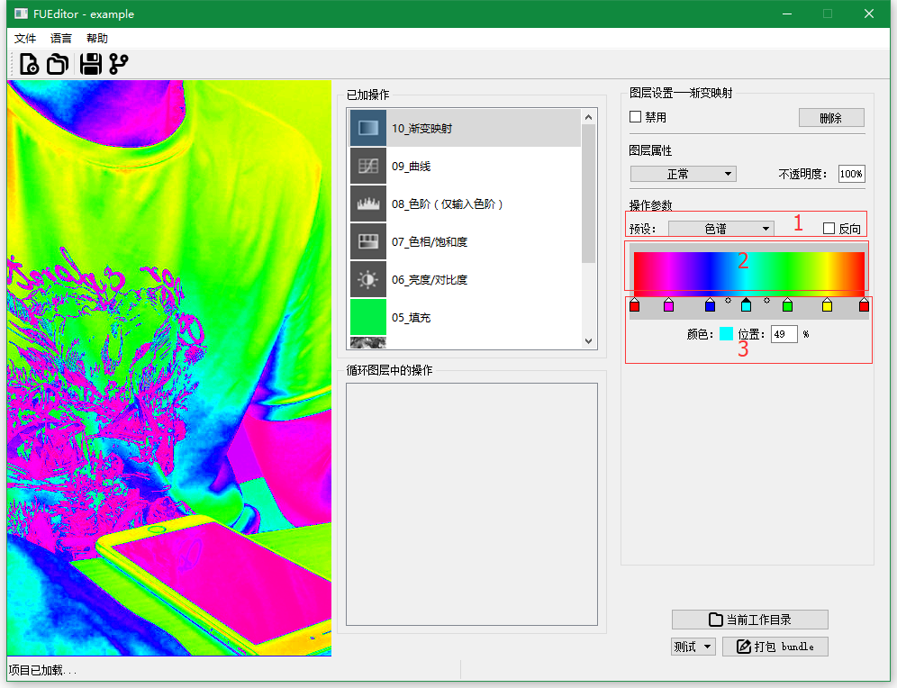
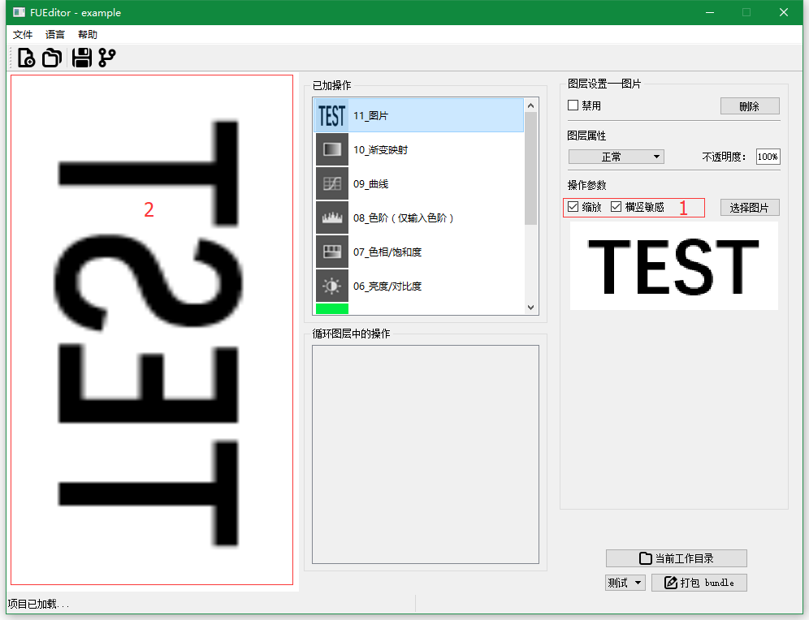
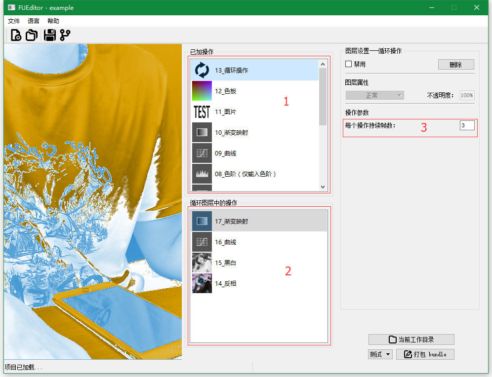
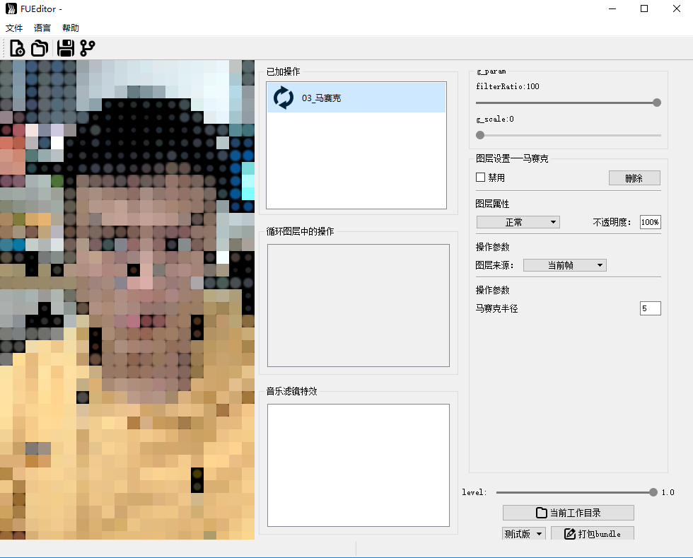
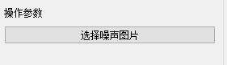

FUEditor - Filter Generator 使用文档1. 程序界面的各区域介绍2. 添加操作3. 操作设置界面4. 混合模式5. 可用操作5.1 复制图层5.2 反相5.3 黑白5.4 填充5.5 亮度/对比度5.6 色相/饱和度5.7 色阶（仅输入色阶）5.8 曲线5.9 渐变映射5.10 图片5.11 色板5.12 循环操作5.13 音乐滤镜5.14 3D眼镜5.15 灵魂出窍5.16 马赛克5.17 MPEG卡顿特效5.18 边缘特效5.19 老电影特效6 打包道具
FUEditor - Filter Generator 使用文档
1. 程序界面的各区域介绍

- 区域1
显示当前项目名； - 区域2
菜单栏； - 区域3
工具栏；依次为：新建、打开、保存、另存为； - 区域4
实时预览区； - 区域5
当前已添加的操作； - 区域6
显示循环操作；
仅当区域5选择循环操作时，此区域可用； - 区域7
区域5或区域6中选中操作的相关设置； - 区域8
打开当前工作目录、打包道具等功能； - 区域9
打开项目、保存项目、打包bundle等操作的提示 - 区域10
打开项目、保存项目、打包bundle等操作的进度条
2. 添加操作

在区域1或区域2中右键，从弹出菜单（区域3）中选择需要添加的操作；注意，区域1的右键菜单中比区域2的右键菜单多一项循环操作。
3. 操作设置界面

- 区域1
显示当前操作名； - 区域2
禁用、删除当前操作。 - 禁用：由于无法调整添加操作的顺序，所以提供禁用功能。勾选后，当前操作失效，但保留在已加操作中。（可恢复）
- 删除：直接删除当前操作。（不可恢复）
- 区域3
该图层的混合模式（效果与ps一致，支持的混合模式）、不透明度；
注：若当前图层为循环操作，则此区域不可用。 - 区域4
当前操作的相关设置（各操作不同）； - 图层来源
某些操作是直接修改图层内容（如反相），而某些操作则是应用在当前的结果上（如曲线）；
图层来源的功能，相当于在ps里的复制图层，并对图层应用当前操作（如上图为复制当前帧，并对其进行反相操作）； 图层编号，与已加操作/循环图层中的操作里的图层名称前面所带数字对应。
4. 混合模式

支持的混合模式有：
- 正常
- 变暗
- 正片叠底
- 颜色加深
- 线性加深
- 深色
- 变亮
- 滤色
- 颜色减淡
- 线性减淡（添加）
- 浅色
- 叠加
- 柔光
- 强光
- 线性光
- 点光
- 差值
- 减去
- 划分
- 色相
- 饱和度
- 颜色
- 明度
5. 可用操作
此处介绍所有可用的操作。
5.1 复制图层
功能与ps里的复制图层相同。复制的图层由上图中区域4的图层来源指定。
5.2 反相

复制由上图中区域1的图层来源指定的图层，并对其进行反相操作。
5.3 黑白

复制由图层来源指定的图层，并对其进行黑白操作。
- 区域1
勾选色调后，可点击灰色小块，选取颜色； - 区域2
进行黑白操作所需的六个参数；
5.4 填充

填充一个纯色图层。所填充的颜色可通过点击区域1进行选取。点击区域1后，会出现颜色选取对话框（区域2），其中，区域3可设置所填充颜色的透明度。
5.5 亮度/对比度

可选参数为：亮度、对比度。
5.6 色相/饱和度

可选参数为：是否着色、色相、饱和度、明度。
5.7 色阶（仅输入色阶）

- 区域1
可选择不同通道（RGB、R、G、B）； - 区域2
三个三角形滑块可以进行拖动，修改参数； - 区域3
手动输入具体数值，修改参数；
5.8 曲线

区域1
可选择不同通道（RGB、R、G、B）；区域2
- 添加点
点击曲线上没有点的位置； - 修改点
拖动曲线上已有的点； - 删除点
按键盘delete键；将点往左（右）拖拽至左（右）边点的左（右）边，松开鼠标；
- 添加点
区域3
手动输入具体数值，修改当前选中的点（红色点）参数；
5.9 渐变映射

区域1
- 预设
提供了几个ps中的预设； - 反向
将映射反向反转；
- 预设
区域2
当前映射方案的预览图；区域3
两种形状的滑块均可以选中、滑动；
选中滑块后，可直接拖拽滑块，也可通过下方的输入框直接输入位置；
当选中带颜色滑块时，可通过点击文字“颜色”旁边的颜色方块进行颜色选择；
5.10 图片

- 区域1
选择图片、设置图片是否缩放、是否横竖敏感； - 区域2
选择的图片的预览；
- 缩放
勾选后，图片会直接填充满整个画面（见下图2）；
取消勾选后，图片不是直接填充满整个画面，而是沿横竖两个反向进行重复复制（见下图1）； - 横竖敏感
勾选后，图片会根据当前图片和当前帧的横宽（电脑一般为宽屏）进行旋转（见下图3）；
取消勾选后，图片不会进行旋转（见下图2）；
注：可利用我们提供的颗粒图（data/resources/keli_1.png、data/resources/keli_2.png），图层混合模式选择正片叠底、取消勾选缩放，实现颗粒效果。
- 图1：输入的图比当前帧小，在未勾选缩放的情况下，会对图片沿横竖两个反向进行复制
- 图2：输入的图比当前帧小，但在勾选缩放的情况下，直接对图片进行放大；同时，图片与当前帧反向不同（一横一竖），因为未勾选横竖敏感，图片宽边对应当前帧的短边，图像比例失调比较明显

- 图3：图片与当前帧反向不同（一横一竖），但在勾选了横竖敏感后，对图片进行了90度旋转

5.11 色板

由于目前FUEditor提供的操作未覆盖ps里的所有操作，而某些情况下，又需要其他操作。我们因此提供了该功能。
使用我们提供的原始色板（data/resources/clean_palette.png），在ps里对其进行相应的操作，在导出结果，将结果导入到该位置，可实现对应的效果。
5.12 循环操作

通过该操作，支持动态效果；
该操作有一个参数可设置：每个操作持续帧数，控制每个操作起作用的时间。
当在区域1中选中循环操作后，区域2变为可用状态，可以在其中添加需要切换的操作。
以上图为例说明循环的顺序：
17->18->19->20->17->18->19->20……若需要以下面的顺序循环，可在20后面，依次新建与19、18一模一样的操作（操作类型、混合模式、参数等）
xxxxxxxxxx17->18->19->20->19->18->17->18……5.13 音乐滤镜
- 在最上层的主功能窗口添加音乐滤镜（musicfilter）特效

- 在音乐滤镜特效的子窗口添加子特效，点击子特效可以调整子特效参数

- 选中子特效时可以滑动g_param中的filterRatio来调整子特效的程度，这个程度就是和音乐强度绑定的值。

- 选中主窗口的music filter，浏览并添加音乐，中文为读取歌曲（MP3格式）。__ 注意__：音乐所在路径不能包含空格，中文。

- 打包bundle时就会根据添加的音乐的强度来生成音乐特效，特效会在音乐的鼓点（强度的波峰）处进行随机切换。
- 注意：主功能中musicfilter不能和其他功能同时添加，如果已经添加了musicfilter其他功能将无法添加，只可以操作子窗口。
5.14 3D眼镜
 红蓝色偏特效。可以调节操作参数中的transform percent（位移比）来控制色偏程度。
红蓝色偏特效。可以调节操作参数中的transform percent（位移比）来控制色偏程度。
同时可以滑动filterRatio来调整滤镜整体程度（给音乐滤镜使用）
5.15 灵魂出窍
 灵魂出窍特效。可以调节融合程度参数。
灵魂出窍特效。可以调节融合程度参数。
同时可以滑动filterRatio来调整滤镜整体程度（给音乐滤镜使用）
5.16 马赛克

马赛克特效。可以调节马赛克半径参数。
同时可以滑动filterRatio来调整滤镜整体程度（给音乐滤镜使用）
5.17 MPEG卡顿特效
MPEG卡顿特效。需要先选择加载一张噪声图片

同时可以滑动filterRatio来调整滤镜整体程度（给音乐滤镜使用）

5.18 边缘特效
 边缘特效。可以调节blendratio参数（融合程度）。
边缘特效。可以调节blendratio参数（融合程度）。
同时可以滑动filterRatio来调整滤镜整体程度（给音乐滤镜使用）
5.19 老电影特效
老电影特效。需要先选择加载一张噪声图片
同时可以滑动filterRatio来调整滤镜整体程度（给音乐滤镜使用）

6 打包道具
与FUEditor的另外两款工具（2D、3D）不同的是，视频滤镜工具打包时只有测试和发布两种模式可以选择，并且不会提供zip文件等未经打包的道具。